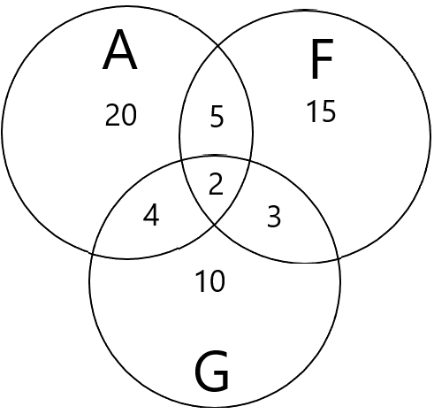

Урок 7. Решение логических задач
Логические задачи встречаются в повседневной жизни, на экзаменах и в олимпиадах. Их решение развивает мышление и учит строить строгие рассуждения. В этом уроке мы рассмотрим основные методы решения логических задач и применим знания алгебры логики, полученные в предыдущем уроке.
1. Основные методы решения
- Табличный метод – построение таблицы, в которой строки соответствуют объектам, а столбцы – их свойствам. Заполнение таблицы на основе условий позволяет найти искомое.
- Метод рассуждений – последовательное логическое исключение вариантов с опорой на условия.
- Алгебраический метод – составление логических выражений по условию и их упрощение или построение таблиц истинности.
- Круги Эйлера (диаграммы Венна) – удобны для задач с множествами и пересечениями.
2. Табличный метод. Пример «Три дочери»
Условие: Три дочери Дорис Кей — Джуди, Айрис и Линда — живут в разных городах: Париж, Рим, Чикаго. У каждой из них свой талант: пение, балет, кино. Известно:
- Джуди живёт не в Париже, а Линда — не в Риме.
- Парижанка не снимается в кино.
- Та, кто живёт в Риме — певица.
- Линда равнодушна к балету (то есть она не балерина).
Решение табличным методом. Составим таблицу, где строки — имена, столбцы — города и таланты. Будем отмечать невозможные варианты знаком «–», а установленные — знаком «+».
| Имя | Париж | Рим | Чикаго | Пение | Балет | Кино |
|---|---|---|---|---|---|---|
| Джуди | – (1) | ? | ? | ? | ? | ? |
| Айрис | ? | ? | ? | ? | ? | ? |
| Линда | ? | – (1) | ? | ? | – (4) | ? |
Из (3) следует, что жительница Рима — певица. Значит, если кто-то живёт в Риме, у неё талант «пение». Из (2) парижанка не может быть киноактрисой, значит её талант либо пение, либо балет, но пение уже занято Римом, поэтому парижанка — балерина. Тогда жительница Чикаго — киноактриса.
Линда не балерина (4), значит она не парижанка (т.к. парижанка — балерина). Также Линда не живёт в Риме (1), следовательно, Линда живёт в Чикаго и она киноактриса.
Джуди не в Париже (1), значит она либо в Риме, либо в Чикаго. Но Чикаго уже занято Линдой, поэтому Джуди живёт в Риме и она певица. Тогда Айрис достаётся Париж и балет.
Ответ: Джуди — Рим, певица; Айрис — Париж, балерина; Линда — Чикаго, киноактриса.
3. Алгебраический метод (составление логических выражений)
Рассмотрим задачу, в которой нужно определить, кто из трёх подозреваемых совершил преступление, на основе их высказываний.
Задача «Ограбление». Трое друзей — А, Б и В — подозреваются в ограблении. Известно:
- Если А виновен, то Б не виновен.
- Если Б не виновен, то В виновен.
- В не виновен.
Кто виновен?
Решение. Введём переменные: A = «А виновен», B = «Б виновен», C = «В виновен». Запишем условия в виде формул:
1) A → ¬B
2) ¬B → C
3) ¬C
Из (3) C = 0. Тогда (2): ¬B → 0, это возможно только если ¬B = 0 (иначе импликация была бы ложна), значит ¬B = 0, то есть B = 1. Из (1): A → ¬B, но ¬B = 0, значит A → 0, следовательно A = 0 (иначе импликация ложна).
Итак, A=0, B=1, C=0. Виновен Б.
Можно проверить подстановкой: все условия выполняются.
4. Метод кругов Эйлера (диаграммы Венна)
Этот метод удобен, когда речь идёт о классификации объектов по нескольким свойствам.
Задача «Языки». В группе туристов 20 человек знают английский, 15 — французский, 10 — немецкий. Английский и французский знают 5 человек, английский и немецкий — 4, французский и немецкий — 3. Все три языка знают 2 человека. Сколько всего туристов в группе, если каждый знает хотя бы один язык?
Решение. Обозначим множества: A — знающие английский, F — французский, G — немецкий. По формуле включений-исключений:
|A ∪ F ∪ G| = |A| + |F| + |G| – |A∩F| – |A∩G| – |F∩G| + |A∩F∩G| = 20+15+10 –5–4–3 +2 = 35.

Ответ: 35 туристов.
Примечание: если бы не все знали хотя бы один язык, нужно было бы учитывать тех, кто не знает ни одного.
5. Задачи с рыцарями и лжецами (метод рассуждений)
Классический тип задач: рыцари всегда говорят правду, лжецы всегда лгут.
Задача «Остров». Путешественник встретил двух аборигенов, каждый либо рыцарь, либо лжец. Первый сказал: «Мы оба лжецы». Кто есть кто?
Решение. Предположим, первый — рыцарь. Тогда его высказывание истинно, значит оба лжецы. Но если он рыцарь, он не может быть лжецом. Противоречие. Значит, первый — лжец. Тогда его высказывание ложно. Оно гласит: «Мы оба лжецы». Ложь этого утверждения означает, что неверно, что оба лжецы, то есть хотя бы один — рыцарь. Поскольку первый — лжец, то второй должен быть рыцарем. Ответ: первый лжец, второй рыцарь.